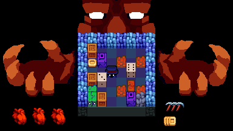
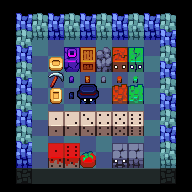
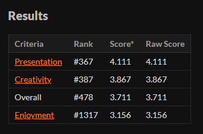

Eyes on the Dice

Some gameplay.
Made in 48 hours for GMTK Game Jam 2022 "Roll of the Dice"
> Play here!Eyes on the Dice is my first solo game jam entry and for a big game jam as well (over six thousand entries!) The basic premise of the game is to survive as long as possible by rolling the dice that the demon summons at you. The result of the dice would determine the dangers (or rewards) that the demon will summon from their other hand.
The space is getting filled up...
Nearing the completion of the game, I realized some major design and gameplay flaws, the game was too "easy" or rather it was easy to do nothing at all and survive and it was also hard to actually roll the dice to your favor. In short, the actions of the player barely mattered and you would have to be actively trying to lose to actually lose.
Showcase of the art of the game and some unused sprites.
#478 out of 6,000+ entries, Not bad!
I definitely spent too much time polishing (as is my problem for all my projects) but at least the game looks very presentable although with some balancing issues. There were also some bugs and even more bugs that resulted in cut features. Nevertheless, I am still very satisfied with the results, especially for a 2 day solo jam.
Status: Released
> Play here! < Back to works